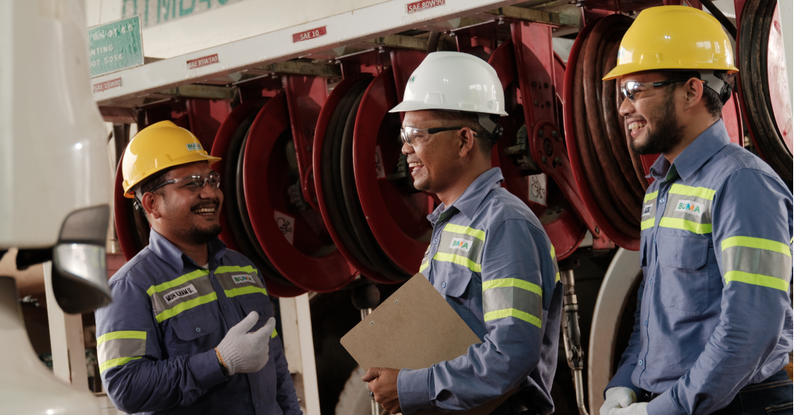

Delta Dunia Grup Catatkan Hasil Tangguh di Semester I - 2024 di Tengah Kondisi Cuaca Ekstrem dan Pelemahan Nilai Tukar Mata Uang
PT Delta Dunia Makmur Tbk (“Delta Dunia Group” atau “Grup”) mengumumkan hasil keuangan yang stabil untuk semester I - 2024, yang mencerminkan ketangguhan dan keunggulan operasional Grup dalam menghadapi kondisi cuaca yang ekstrem dan pelemahan nilai tukar mata uang.
Efisiensi Operasional Mendorong Kinerja Keuangan yang Tangguh
Volume batu bara Grup tetap stabil pada 42 metrik ton (MT) YoY, sementara pengupasan tanah (Overburden
Removal) secara keseluruhan turun 5% sebesar 271 juta bank cubic meter (bcm) akibat curah hujan
ekstrem yang terus berlanjut, yang memengaruhi tingkat produksi selama enam bulan terakhir. Kondisi
cuaca ekstrem telah berdampak pada industri pertambangan secara luas di Indonesia dan sektor-sektor
lain di seluruh Asia, namun kemampuan operasional dan adaptasi strategis Grup memastikan kemajuan yang
berkelanjutan dalam mencapai target. Upaya pemulihan-pasca-hujan yang Grup lakukan telah menunjukkan
keberhasilan yang signifikan dengan peningkatan sebesar 12% YoY. Hal ini menunjukkan komitmen Grup
terhadap keunggulan operasional.
Pendapatan untuk semester I - 2024 tetap stabil sebesar USD855 juta YoY. Namun, EBITDA turun 9% YoY menjadi USD160 juta, didorong oleh volume yang lebih rendah. Kenaikan awal biaya tunai dari inisiatif efisiensi yang sedang berlangsung diperkirakan akan kembali normal ketika langkah-langkah ini berlaku sepenuhnya. Grup melaporkan kerugian bersih sebesar USD27 juta pada semester I - 2024, bergeser dari laba bersih sebesar USD 5 juta pada semester I - 2023. Penurunan ini terutama disebabkan oleh kerugian selisih kurs sebesar USD12 juta akibat fluktuasi nilai tukar mata uang yang merugikan dari IDR dan AUD terhadap USD. Namun, kerugian selisih kurs membaik pada Q2 2024, menurun dari USD11,5 juta pada Q1 2024 menjadi USD0,7 juta pada Q2 2024. Jika kerugian selisih kurs dinormalisasi, bersama dengan dampak dari Secured Overnight Financing Rate (SOFR) dan biaya persetujuan satu kali (one-off consent costs), kerugian bersih Grup sebesar USD1 juta, mendekati break even, yang menunjukkan ketahanan bisnis.
Arus kas operasional untuk semester I - 2024 meningkat 15% YoY, mencapai sekitar USD164 juta, didorong oleh peningkatan yang signifikan dalam pengelolaan modal kerja. Namun, arus kas bebas menurun karena investasi yang signifikan pada aset-aset seperti Sun Energy dan akuisisi strategis Atlantic Carbon Group, Inc (ACG) yang baru saja dirampungkan. Jika dinormalisasi dengan akuisisi ACG, arus kas bebas akan menjadi USD68 juta dibandingkan dengan negatif USD47 juta.
Ekspansi operasional mendorong sebagian besar pertumbuhan belanja modal Grup pada semester I - 2024, yang meningkat 78% YoY menjadi USD79 juta. Pengeluaran ini mendukung kegiatan ramp-up di sejumlah site yang ada di Indonesia dan Australia serta kapitalisasi biaya Perbaikan dan Pemeliharaan (Repair & Maintenance), sejalan dengan panduan belanja modal Grup untuk setahun penuh sebesar USD150 juta hingga USD190 juta. Seiring dengan ekspansi operasional Grup, mempertahankan kontrol yang ketat atas belanja modal tetap menjadi fokus utama.
Dian Andyasuri, Direktur Delta Dunia Group, mengatakan, “Di tengah kondisi cuaca ekstrem dan pelemahan nilai tukar mata uang, Delta Dunia Group menghasilkan kinerja yang stabil pada semester pertama tahun 2024. Ketahanan ini mencerminkan kejelian strategis kami dalam menavigasi risiko yang tak terkendali dan komitmen kami untuk mentransformasi bisnis dan mendiversifikasi sumber pendapatan kami, memosisikan kami untuk pertumbuhan yang berkelanjutan menuju ekonomi rendah karbon.”
Pengelolaan Utang yang Efektif dan Diversifikasi Strategis Mendukung Pertumbuhan Jangka Panjang Grup telah secara proaktif mengelola kewajibannya dengan menyelaraskan jatuh tempo utang dengan masa pakai peralatan, dan berhasil melakukan reprofiling sebagian besar utang yang jatuh tempo pada 2026. Pada semester I - 2024, 15% dari utang ini akan jatuh tempo pada 2027, sementara 33% dijadwalkan untuk dilunasi pada 2028 dan seterusnya. Posisi kas Grup mencapai USD260 juta, dengan rasio utang bersih terhadap EBITDA yang sehat sebesar 1,90x per 30 Juni 2024, yang mencerminkan manajemen leverage yang cermat dan memposisikan Grup untuk pertumbuhan masa depan. Grup mengantisipasi perbaikan rasio ini seiring kontribusi EBITDA dari ACG
Keberhasilan penyelesaian akuisisi ACG, produsen antrasit berkadar sangat tinggi (ultra-high-grade/UHG antrasit) terbesar kedua di Amerika Serikat, mentransformasi Grup menjadi pemilik tambang. Langkah ini semakin mendiversifikasi Grup sambil mempertahankan posisi pasarnya yang terkemuka sebagai kontraktor pertambangan Tingkat 1 di Indonesia dan Australia. Akuisisi ACG diproyeksikan akan meningkatkan proporsi pendapatan grup dari sumber non-termal menjadi 28% pada akhir tahun 2024, sejalan dengan komitmen Grup untuk mengurangi pendapatan dari batu bara termal menjadi 50% pada tahun 2028.
Selain kesuksesan diversifikasi sumber pendapatan, inisiatif ESG Grup telah menunjukkan kemajuan signifikan. Grup telah menyelesaikan konsolidasi data dasar karbon di seluruh operasi di Indonesia dan Australia, serta menerapkan langkah-langkah pengurangan karbon di beberapa lokasi. Rencana sedang dilakukan untuk memperluas strategi ini ke lokasi-lokasi lain pada Semester II - 2024.
Iwan Fuad Salim, Direktur Delta Dunia Group, mengatakan, “Memasuki paruh kedua tahun ini, kami tetap fokus pada keunggulan operasional dan manajemen keuangan yang cermat, sambil menjalankan strategi pertumbuhan di saat yang bersamaan. Ekspansi kami baru-baru ini di AS menunjukkan komitmen kami untuk menciptakan nilai jangka panjang bagi para pemegang saham dengan mentransformasi Grup menjadi bisnis pertambangan yang terdiversifikasi secara global. Akuisisi ACG telah memperkuat posisi kami, di mana kami yakin akan memberikan kontribusi positif terhadap upaya diversifikasi kami.”
Manajemen Grup telah menunjukkan kepercayaan diri terhadap prospek perusahaan melalui inisiatif pembelian kembali saham dan pengurangan modal. Hingga 26 Juli 2024, Grup telah membeli 483,1 juta lembar saham melalui program pembelian kembali saham (share buyback). Grup juga membeli USD34,8 juta Senior Notes melalui pembelian di pasar terbuka dan USD153 juta melalui penawaran tender. Inisiatif-inisiatif ini bertujuan untuk mengoptimalkan nilai pemegang saham dan meningkatkan imbal hasil bagi para pemegang saham.
Pendapatan untuk semester I - 2024 tetap stabil sebesar USD855 juta YoY. Namun, EBITDA turun 9% YoY menjadi USD160 juta, didorong oleh volume yang lebih rendah. Kenaikan awal biaya tunai dari inisiatif efisiensi yang sedang berlangsung diperkirakan akan kembali normal ketika langkah-langkah ini berlaku sepenuhnya. Grup melaporkan kerugian bersih sebesar USD27 juta pada semester I - 2024, bergeser dari laba bersih sebesar USD 5 juta pada semester I - 2023. Penurunan ini terutama disebabkan oleh kerugian selisih kurs sebesar USD12 juta akibat fluktuasi nilai tukar mata uang yang merugikan dari IDR dan AUD terhadap USD. Namun, kerugian selisih kurs membaik pada Q2 2024, menurun dari USD11,5 juta pada Q1 2024 menjadi USD0,7 juta pada Q2 2024. Jika kerugian selisih kurs dinormalisasi, bersama dengan dampak dari Secured Overnight Financing Rate (SOFR) dan biaya persetujuan satu kali (one-off consent costs), kerugian bersih Grup sebesar USD1 juta, mendekati break even, yang menunjukkan ketahanan bisnis.
Arus kas operasional untuk semester I - 2024 meningkat 15% YoY, mencapai sekitar USD164 juta, didorong oleh peningkatan yang signifikan dalam pengelolaan modal kerja. Namun, arus kas bebas menurun karena investasi yang signifikan pada aset-aset seperti Sun Energy dan akuisisi strategis Atlantic Carbon Group, Inc (ACG) yang baru saja dirampungkan. Jika dinormalisasi dengan akuisisi ACG, arus kas bebas akan menjadi USD68 juta dibandingkan dengan negatif USD47 juta.
Ekspansi operasional mendorong sebagian besar pertumbuhan belanja modal Grup pada semester I - 2024, yang meningkat 78% YoY menjadi USD79 juta. Pengeluaran ini mendukung kegiatan ramp-up di sejumlah site yang ada di Indonesia dan Australia serta kapitalisasi biaya Perbaikan dan Pemeliharaan (Repair & Maintenance), sejalan dengan panduan belanja modal Grup untuk setahun penuh sebesar USD150 juta hingga USD190 juta. Seiring dengan ekspansi operasional Grup, mempertahankan kontrol yang ketat atas belanja modal tetap menjadi fokus utama.
Dian Andyasuri, Direktur Delta Dunia Group, mengatakan, “Di tengah kondisi cuaca ekstrem dan pelemahan nilai tukar mata uang, Delta Dunia Group menghasilkan kinerja yang stabil pada semester pertama tahun 2024. Ketahanan ini mencerminkan kejelian strategis kami dalam menavigasi risiko yang tak terkendali dan komitmen kami untuk mentransformasi bisnis dan mendiversifikasi sumber pendapatan kami, memosisikan kami untuk pertumbuhan yang berkelanjutan menuju ekonomi rendah karbon.”
Pengelolaan Utang yang Efektif dan Diversifikasi Strategis Mendukung Pertumbuhan Jangka Panjang Grup telah secara proaktif mengelola kewajibannya dengan menyelaraskan jatuh tempo utang dengan masa pakai peralatan, dan berhasil melakukan reprofiling sebagian besar utang yang jatuh tempo pada 2026. Pada semester I - 2024, 15% dari utang ini akan jatuh tempo pada 2027, sementara 33% dijadwalkan untuk dilunasi pada 2028 dan seterusnya. Posisi kas Grup mencapai USD260 juta, dengan rasio utang bersih terhadap EBITDA yang sehat sebesar 1,90x per 30 Juni 2024, yang mencerminkan manajemen leverage yang cermat dan memposisikan Grup untuk pertumbuhan masa depan. Grup mengantisipasi perbaikan rasio ini seiring kontribusi EBITDA dari ACG
Keberhasilan penyelesaian akuisisi ACG, produsen antrasit berkadar sangat tinggi (ultra-high-grade/UHG antrasit) terbesar kedua di Amerika Serikat, mentransformasi Grup menjadi pemilik tambang. Langkah ini semakin mendiversifikasi Grup sambil mempertahankan posisi pasarnya yang terkemuka sebagai kontraktor pertambangan Tingkat 1 di Indonesia dan Australia. Akuisisi ACG diproyeksikan akan meningkatkan proporsi pendapatan grup dari sumber non-termal menjadi 28% pada akhir tahun 2024, sejalan dengan komitmen Grup untuk mengurangi pendapatan dari batu bara termal menjadi 50% pada tahun 2028.
Selain kesuksesan diversifikasi sumber pendapatan, inisiatif ESG Grup telah menunjukkan kemajuan signifikan. Grup telah menyelesaikan konsolidasi data dasar karbon di seluruh operasi di Indonesia dan Australia, serta menerapkan langkah-langkah pengurangan karbon di beberapa lokasi. Rencana sedang dilakukan untuk memperluas strategi ini ke lokasi-lokasi lain pada Semester II - 2024.
Iwan Fuad Salim, Direktur Delta Dunia Group, mengatakan, “Memasuki paruh kedua tahun ini, kami tetap fokus pada keunggulan operasional dan manajemen keuangan yang cermat, sambil menjalankan strategi pertumbuhan di saat yang bersamaan. Ekspansi kami baru-baru ini di AS menunjukkan komitmen kami untuk menciptakan nilai jangka panjang bagi para pemegang saham dengan mentransformasi Grup menjadi bisnis pertambangan yang terdiversifikasi secara global. Akuisisi ACG telah memperkuat posisi kami, di mana kami yakin akan memberikan kontribusi positif terhadap upaya diversifikasi kami.”
Manajemen Grup telah menunjukkan kepercayaan diri terhadap prospek perusahaan melalui inisiatif pembelian kembali saham dan pengurangan modal. Hingga 26 Juli 2024, Grup telah membeli 483,1 juta lembar saham melalui program pembelian kembali saham (share buyback). Grup juga membeli USD34,8 juta Senior Notes melalui pembelian di pasar terbuka dan USD153 juta melalui penawaran tender. Inisiatif-inisiatif ini bertujuan untuk mengoptimalkan nilai pemegang saham dan meningkatkan imbal hasil bagi para pemegang saham.